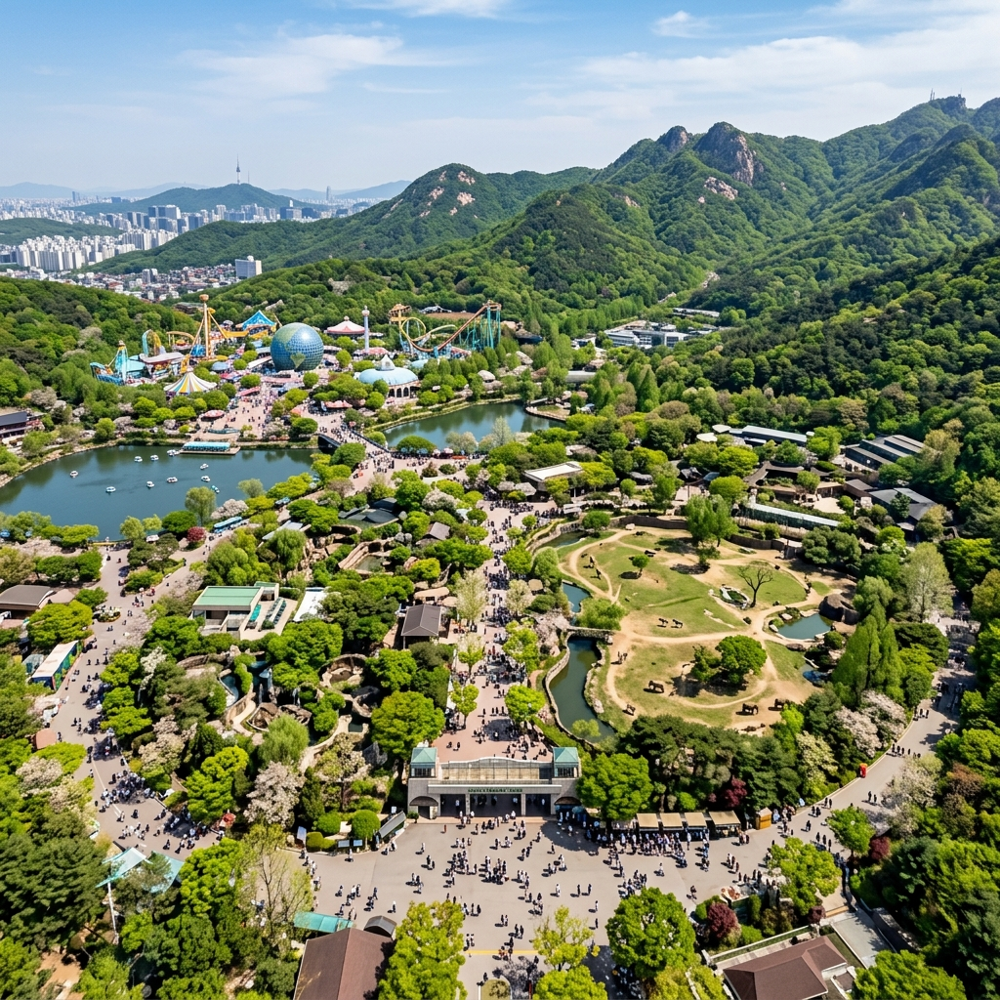
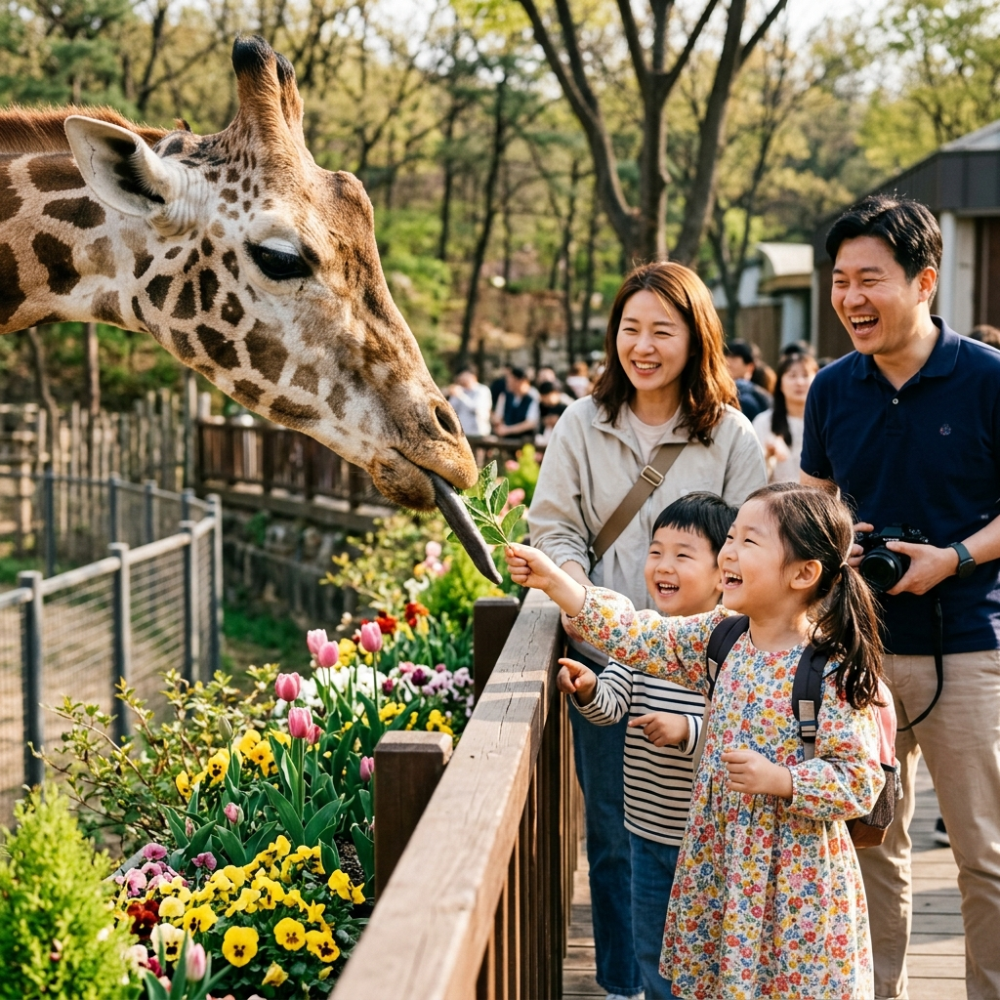
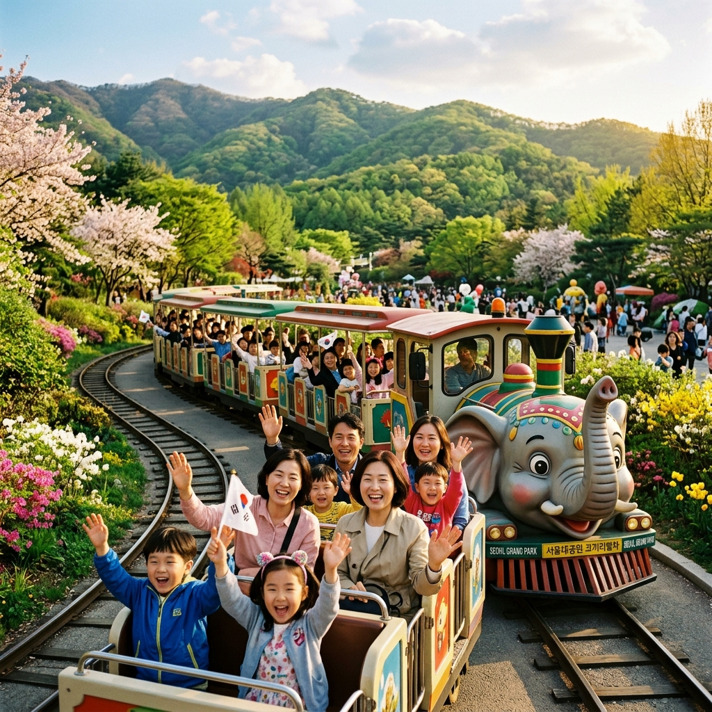

과천 서울대공원 어린이날 2026: 동물원·서울랜드 종일 패스 & 가족 코스 완벽 가이드
어린이날에 아이와 함께 스케일이 큰 경험을 선사하고 싶으시다면, 과천 서울대공원은 단연 최고의 선택입니다. 국내 최대 규모의 동물원, 연간 수백만 명이 찾는 테마파크 서울랜드, 국립현대미술관이 한 자리에 집결된 이곳은 말 그대로 하루 종일 즐길 거리가 넘쳐나는 가족 천국입니다. 특히 어린이날 연휴 기간에는 다양한 할인 행사와 특별 프로그램이 가득 준비되니, 2026년 어린이날을 앞두고 지금 바로 철저한 준비를 시작해 보세요.
| 항목 | 내용 |
|---|
| 위치 | 경기도 과천시 대공원광장로 102 |
| 운영 시간 | 동물원 09:00~18:00 / 서울랜드 09:30~21:00 (시즌별 변동) |
| 입장료 | 동물원 성인 5,000원, 어린이 3,000원 / 서울랜드 별도 |
| 교통 | 4호선 대공원역 2번 출구 도보 5분 (코끼리열차 이용 가능) |
| 주차 | 대공원 주차장 약 4,000면 (어린이날 조기 만차 예상) |
🌿 1. 서울대공원, 규모로 압도하는 과천의 자랑
경기도 과천시 청계산 자락에 자리 잡은 서울대공원은 1984년 개원 이후 40년이 넘는 역사를 자랑하는 수도권 최대의 복합 문화 공간입니다. 전체 부지가 무려 913만 5,000㎡에 달하며, 이 안에 국내 최대 동물원, 놀이공원 서울랜드, 국립현대미술관 과천관, 수목원, 장미원 등 대규모 시설들이 한데 어우러져 있습니다. 서울 어린이대공원이 '아담하고 접근하기 쉬운' 공원이라면, 서울대공원은 '스케일과 콘텐츠로 압도하는' 공원이라고 할 수 있습니다.
어린이날을 맞아 서울대공원을 찾는 이유는 분명합니다. 동물원에는 전 세계 300여 종 3,300여 마리의 동물이 서식하고 있으며, 아프리카 초원 구역, 아시아 동물 구역, 열대조류관, 파충류관 등 테마별로 구성된 관람 코스가 방문객들에게 마치 세계 동물 여행을 하는 듯한 특별한 경험을 선사합니다. 특히 아이들이 가장 환호하는 코끼리, 기린, 하마, 코뿔소 등 대형 초식동물 구역과 아프리카 맹수 구역은 대형 야외 방사장에서 자연에 가까운 환경을 제공하여 동물의 생동감 있는 모습을 가까이서 관찰할 수 있습니다.
또한 서울대공원은 단순한 관람을 넘어 동물 복지와 교육적 가치를 강조하는 방향으로 꾸준히 시설을 개선해왔습니다. 최근에는 '동물 행동풍부화 프로그램'을 통해 동물들이 자연스러운 행동 패턴을 보이도록 유도하는 전시 방식이 도입되어, 아이들에게 단순한 구경 이상의 생생한 생태 교육을 제공하고 있습니다.

[과천 서울대공원 전경] / AI 생성 이미지
🎫 2. 2026년 어린이날 입장료 & 할인 혜택 총정리
서울대공원 방문 시 반드시 파악해야 할 요금 체계를 정리해 드립니다. 서울대공원 동물원과 서울랜드는 별도의 입장권을 운영하고 있으므로, 두 시설을 모두 이용할 계획이라면 각각의 비용을 합산해 예산을 준비하셔야 합니다.
| 시설 | 성인 | 청소년 | 어린이(3~12세) |
|---|
| 동물원 | 5,000원 | 3,000원 | 3,000원 |
| 서울랜드 자유이용권 | 약 45,000원 | 약 38,000원 | 약 33,000원 |
| 코끼리열차 편도 | 1,500원 | 1,000원 | 1,000원 |
※ 위 요금은 2026년 기준 예상 요금이며, 정확한 금액은 서울대공원 공식 홈페이지에서 반드시 재확인하시기 바랍니다.
어린이날 연휴 기간에는 서울시 공공서비스 예약 시스템, 각종 신용카드사 이벤트, T멤버십, 통신사 할인 등을 통해 서울랜드 자유이용권을 최대 30~40% 할인된 가격에 구매할 수 있는 경우가 있습니다. 특히 네이버페이, 카카오페이 등 간편결제 앱을 통한 사전 구매 시 추가 할인 혜택이 제공되는 경우가 많으므로 출발 전 반드시 확인해보세요. 서울시민 및 경기도민 할인, 국가유공자·장애인 감면 혜택도 별도로 적용되니 해당 사항이 있으신 분들은 신분증을 꼭 지참하시기 바랍니다.
🦒 3. 동물원 필수 코스: 동물별 최고의 관람 포인트
서울대공원 동물원을 완벽하게 즐기려면 전략적인 동선 계획이 필수입니다. 정문에서 출발해 시계 반대 방향으로 돌면 아프리카관 → 아시아관 → 아메리카관 → 오세아니아관 → 유럽관 순으로 관람할 수 있으며, 전체를 천천히 관람하면 약 3~4시간이 소요됩니다. 어린이날 당일에는 핵심 구역만 선별해 1.5~2시간 이내에 마무리하는 '스마트 코스'를 추천드립니다.
아이들이 가장 열광하는 1순위는 아프리카 코끼리입니다. 서울대공원의 아프리카 코끼리는 국내에서 가장 큰 규모의 사육 환경에서 생활하며, 관람 덱에서 코끼리의 역동적인 모습을 눈앞에서 감상할 수 있습니다. 2순위는 하마 수중 관찰 터널로, 아이들이 하마의 수중 유영 모습을 유리창 너머로 바라보는 이 구역은 SNS 인증샷 명소이기도 합니다.
3순위는 기린 관람 광장입니다. 6~7m에 달하는 기린이 바로 눈앞에서 먹이를 먹는 모습은 아이들에게 단연 최고의 감동을 선사합니다. 먹이 주기 체험 프로그램(소정의 비용 필요)에 참가하면 기린과 직접 교감하는 잊지 못할 경험을 할 수 있습니다. 4순위는 펭귄 수조, 5순위는 열대조류관으로, 형형색색의 앵무새와 열대 새들이 머리 위를 자유롭게 날아다니는 환경 속에서 관람할 수 있어 아이들의 탄성을 자아냅니다.
🎢 4. 서울랜드 어린이날 특별 운영 가이드
동물원 바로 옆에 위치한 서울랜드는 1988년 개원한 국내 최초 민영 테마파크로, 30여 종의 다양한 어트랙션을 보유하고 있습니다. 어린이날 연휴 기간에는 야간 운영 연장과 함께 화려한 불꽃 퍼레이드, 캐릭터 쇼, 특별 공연 등이 추가 진행되어 가족 방문객들에게 특별한 하루를 선사합니다.
어린이들에게 가장 인기 있는 어트랙션은 원더 드롭(자이로드롭 계열), 아마존 익스프레스(물살 슈팅 라이드), 판타지 코스터(롤러코스터) 등이며, 이 세 가지 기구는 어린이날 당일 대기 시간이 40분~1시간 이상으로 길어질 수 있습니다. 어린 아이들을 위한 소형 어트랙션 존인 코코아빌리지에는 키 제한 없이 탑승 가능한 놀이기구가 밀집해 있어, 유아를 동반한 가족에게 최적의 공간입니다.
서울랜드는 어린이날 당일 오전 9시 30분 개장 직후 자유이용권 구매자들이 한꺼번에 몰려 입구가 극도로 혼잡해집니다. 사전 온라인 구매를 통해 현장 발권 대기 없이 바로 입장하시는 것을 강력히 권장합니다. 또한, 자유이용권 1일권 외에도 주말·공휴일 야간권(저녁 5시 이후 입장)을 활용하면 비용을 절감하면서도 서울랜드의 야간 퍼레이드와 조명 쇼를 즐길 수 있습니다.

[서울대공원 기린 먹이주기 체험] / AI 생성 이미지
🎨 5. 국립현대미술관 어린이 프로그램 참가 가이드
서울대공원 경내에는 국립현대미술관 과천관이 함께 위치해 있습니다. 어린이날 연휴 기간에는 어린이를 위한 특별 전시 및 체험 프로그램이 운영되어, 동물원과 서울랜드 방문 후 지친 몸과 마음을 달래는 '문화 쉼표'로 활용하기에 좋습니다. 미술관 내 야외 조각 공원은 입장 무료로 개방되어 있어, 다양한 현대 조각 작품들 사이를 산책하며 가족사진을 남기기에도 훌륭한 공간입니다.
어린이날 특별 행사로는 어린이 미술 워크숍이 대표적입니다. 전문 미술 강사의 지도 아래 간단한 미술 작품을 직접 만들어보는 이 프로그램은 5~10세 어린이들에게 특히 인기가 높으며, 사전 인터넷 예약을 통해 참가할 수 있습니다. 또한, 미술관 상설 전시 중 어린이 전용 교육 공간 '어린이미술관'은 학예사의 설명과 함께 현대 미술을 쉽고 재미있게 체험할 수 있도록 구성되어 있습니다. 입장권 별도이므로 사전에 국립현대미술관 공식 홈페이지에서 예약 여부를 확인하세요.
🚡 6. 코끼리열차 & 자연 산책로 추천
서울대공원 방문의 또 다른 묘미는 바로 코끼리열차입니다. 대공원역 광장에서 출발해 동물원 정문까지 이어지는 이 미니 열차는 1984년 개원 당시부터 운행된 서울대공원의 상징적인 교통수단입니다. 편도 약 10분 거리를 코끼리 모양 열차를 타고 이동하는 경험 자체가 아이들에게는 하나의 어트랙션이 되며, 늦은 오후에 지친 아이를 태우고 귀갓길을 가볍게 만들어주는 데도 탁월합니다.
동물원 관람과 서울랜드 방문 사이 시간적 여유가 생겼다면, 공원 내 산림욕장 자연 산책로를 천천히 걷는 것도 강력히 추천드립니다. 청계산 자락을 따라 조성된 이 산책로는 5월 신록이 우거져 초록 터널을 이루며, 아이들과 함께 자연을 느끼며 피크닉을 즐기기에도 더할 나위 없이 좋은 환경입니다. 유모차 이동이 가능한 포장 산책로와 흙길 산책로가 분리되어 있으니, 동반 어린이의 연령과 체력에 맞게 코스를 선택하시면 됩니다.

[서울대공원 코끼리열차] / AI 생성 이미지
🚗 7. 주차 & 교통 전략: 막히지 않게 오는 법
서울대공원 역시 어린이날에는 교통 대란이 예상되는 곳입니다. 주차장 규모는 서울 어린이대공원보다 크지만(약 4,000면), 방문객 수 역시 압도적으로 많기 때문에 오전 10시를 넘기면 이미 주차장 진입 차량으로 인해 극심한 정체가 시작됩니다. 대중교통을 이용하시는 것이 가장 현명한 선택입니다.
지하철 4호선 대공원역 2번 출구에서 공원 정문까지는 도보 약 5분 거리입니다. 서울 도심에서의 접근은 물론, 강남권에서도 환승 없이 방문할 수 있어 교통 접근성이 매우 뛰어납니다. 경기 남부 및 안양, 수원, 성남 방면에서도 버스 노선이 잘 갖춰져 있으니 대중교통을 최대한 활용하시기 바랍니다.
자가용이 불가피하다면, 오전 8시 30분 이전 도착을 목표로 해야 합니다. 이른 시간대에는 상대적으로 원활하게 주차장에 진입할 수 있습니다. 주차 요금은 최초 30분 무료 후 시간당 1,000~1,500원 수준이며, 1일 최대 요금제가 적용됩니다. 공원 외부의 과천시청 인근 공영주차장이나 과천 막계 공영주차장을 이용한 후 도보로 이동하는 방법도 있으니 참고하세요.
🍔 8. 주변 먹거리 & 간식 완벽 가이드
서울대공원 내부에는 동물원 구역과 서울랜드 구역 곳곳에 다양한 식음료 시설이 운영되고 있습니다. 메인 레스토랑부터 간식 코너, 편의점까지 선택지가 풍부하지만, 어린이날 당일에는 점심 시간대(오전 11시 30분~오후 1시 30분)에 극심한 혼잡이 예상되므로 주의가 필요합니다.
가장 합리적인 식사 전략은 역시 도시락 지참입니다. 동물원 내 잔디 광장이나 야외 피크닉 테이블에 자리를 잡고 직접 준비한 도시락을 먹는 경험은 아이들에게 소풍의 낭만을 선사하는 동시에 비용도 크게 절약할 수 있습니다. 도시락을 가져오기 어려운 경우, 대공원역 인근의 편의점이나 과천 시내 분식집에서 간단히 해결하고 오시는 방법도 있습니다. 서울랜드 내 여러 레스토랑 중 패밀리 레스토랑 구역은 어린이 메뉴가 다양하게 구성되어 있으니 참고하세요.
📋 9. 어린이날 황금 루트 & 시간표 짜는 법
서울대공원에서 어린이날 하루를 알차게 보내기 위한 추천 황금 루트를 공유해 드립니다. 당일 컨디션과 동반 아이의 연령에 따라 조정하시면 더욱 만족스러운 방문이 될 것입니다.
📌 서울대공원 어린이날 황금 루트 (1일 코스)
08:30 대공원역 도착 (주차 완료 또는 지하철 이용) →
09:00 코끼리열차 탑승해 동물원 정문 이동 →
09:30~11:30 동물원 핵심 코스 관람 (코끼리 → 기린 → 하마 → 맹수 → 펭귄) →
11:30 잔디 광장 도시락 피크닉 →
13:00 서울랜드 이동, 자유이용권으로 핵심 기구 탑승 →
16:00 국립현대미술관 야외 조각 공원 산책 →
17:30 코끼리열차로 대공원역 이동 후 귀가
어린이날 서울대공원은 분명 복잡하고 피곤할 수 있지만, 동시에 아이의 눈망울에 가득 담기는 경이와 행복의 순간은 그 어떤 피로도 잊게 만드는 특별한 경험입니다. 철저한 준비로 2026년 어린이날을 잊지 못할 가족 추억의 날로 만들어 보세요!
#서울대공원
#과천서울대공원
#어린이날2026
#서울랜드
#서울대공원동물원
#어린이날가볼만한곳
#과천가족여행
#코끼리열차
#어린이날행사
#5월경기여행